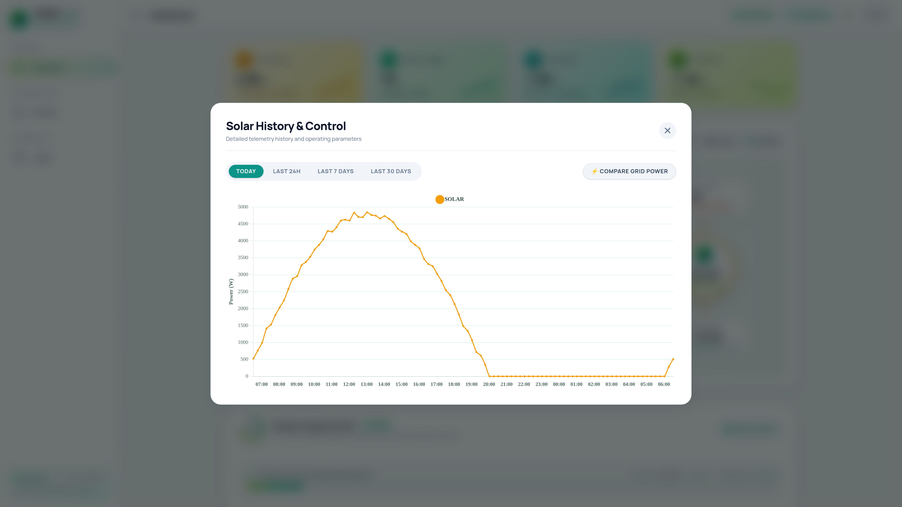
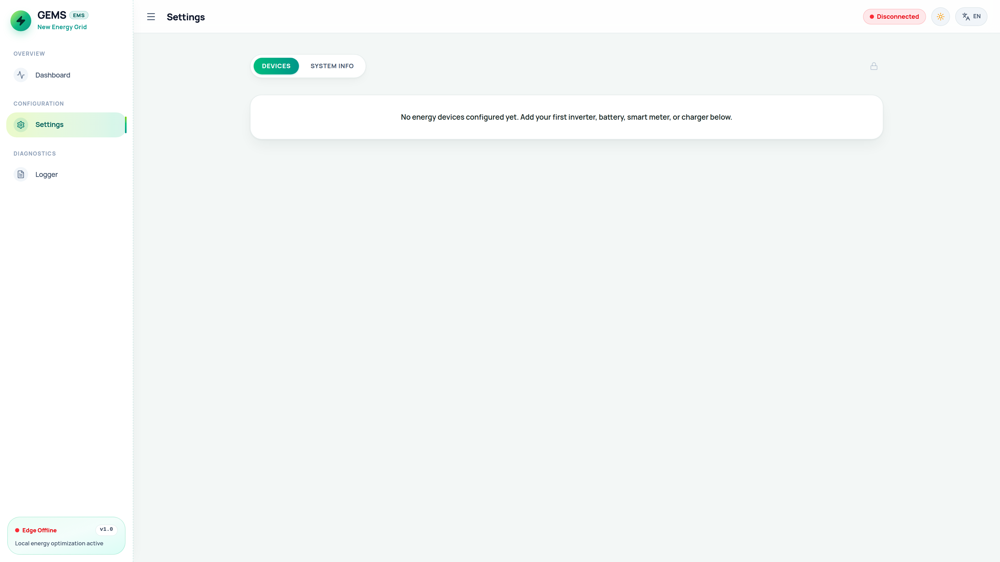
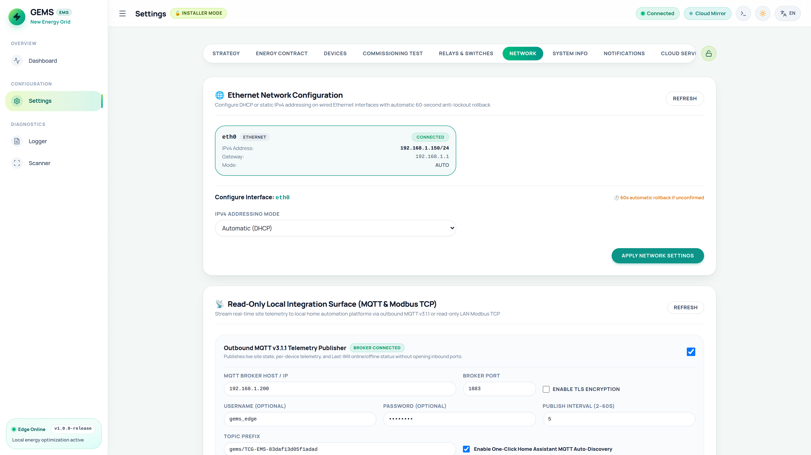
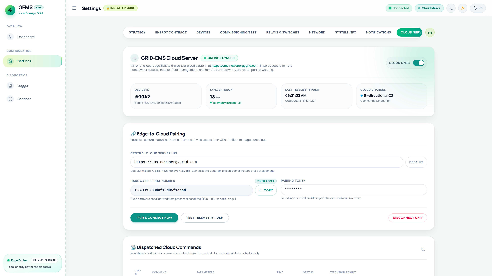

⚡ BROCHURE INTERACTIVE • GUIDE PAS-À-PAS • ENCYCLOPÉDIE DES PARAMÈTRES
Manuel Utilisateur & Configuration GEMS
La Brochure Interactive Complète, le Guide d'Installation Pas-à-Pas, le Manuel d'Utilisation Quotidienne et la Référence Détaillée de Chaque Paramètre pour GRID-EMS (GEMS) par New Energy Grid & The Charge Grid
100 % LocalZéro Abonnement
1 SecondeRégulation Temps Réel
8 OngletsChaque Option Expliquée
4 NiveauxBouclier Prix Négatifs
Version du SystèmeGEMS v9.53.0
À Qui S'adresse Ce GuideParticuliers, Résidents, Gestionnaires de Site & Installateurs
Écosystème Matériel de RéférenceOnduleurs Hybrides & Stockage Solis • Bornes VE Intelligentes Raedian • P1 & Shelly
Édition DocumentaireBrochure Interactive & Référence Complète des Paramètres de A à Z
📖 Feuille de Route Interactive & Table des Matières
1. Bienvenue dans GEMS : Pourquoi Votre Maison Mérite un Cerveau Énergétique
Bienvenue dans GEMS (Grid Energy Management System) conçu par New Energy Grid et The Charge Grid ! Installé directement dans votre tableau électrique sur un calculateur industriel Raspberry Pi 5 doté d'un stockage SSD NVMe ultra-endurant, GEMS est le chef d'orchestre autonome de l'ensemble de votre installation électrique.
☀️🔋
Maximiser le Solaire Gratuit & le Stockage
Chaque watt excédentaire issu de votre Onduleur Hybride Solis alimente d'abord votre foyer, puis votre batterie domestique, ensuite votre Borne VE Raedian et enfin votre production d'eau chaude — portant l'autoconsommation à plus de 85 %.
🛡️📉
Écrêtage Capacitaire & Protection Disjoncteur
Lit votre compteur numérique P1 à chaque seconde. Si la cuisson et la lessive provoquent un appel de puissance, GEMS décharge aussitôt la batterie et module la borne VE afin de contenir votre pointe quart-horaire (Tarif capacitaire Flandre) et d'éviter toute disjonction.
💶⚡
Tarifs Dynamiques & Bouclier Prix Négatifs
Télécharge chaque jour à 13h00 CET les prix horaires EPEX Spot Day-Ahead. Recharge votre batterie et votre véhicule durant les heures nocturnes les moins chères et vous protège des pénalités d'injection lorsque les prix deviennent négatifs l'après-midi.
Contrairement aux boîtiers dépendants du cloud qui cessent de fonctionner lors d'une coupure Internet ou imposent un abonnement mensuel, GEMS exécute toutes les mesures, l'équilibrage dynamique de charge, le pilotage batterie et les calculs tarifaires 100 % localement chez vous. En option, vous pouvez l'associer gratuitement à GRID-EMS-SERVER (https://ems.newenergygrid.com) pour le suivi sur smartphone et le diagnostic installateur à distance.
2. 24 Heures dans la Vie de GEMS (Storyboard Interactif)
Vous vous demandez ce que fait concrètement GEMS pendant que vous dormez, travaillez, cuisinez et vous détendez ? Suivez une journée type de 24 heures dans une habitation équipée d'un Onduleur Hybride Solis S6 + Batterie, d'une Borne Intelligente Raedian NEO, d'un compteur communicant P1 et d'une pompe à chaleur SG-Ready :
🎮 Simulateur Interactif : Cliquez sur un Moment de la Journée pour Voir la Réaction de GEMS !
🌙 02h30 — Créneau Spot Économique (0,04 €/kWh) : Les prévisions météo annoncent un ciel très couvert demain et les prix spot atteignent leur plus bas niveau de la nuit. GEMS commande automatiquement à l'Onduleur Hybride Solis de pré-charger la batterie jusqu'à 80 % de SoC cible et programme la Borne VE Raedian sur les 4 heures les moins chères — tout en restant strictement sous le plafond capacitaire flamand de 2,50 kW !
GEMS consulte la prévision solaire Open-Meteo du lendemain. Si la journée s'annonce nuageuse et que le tarif EPEX descend sous votre Plafond de Charge Réseau (€/kWh), GEMS pré-charge votre batterie Solis et votre borne Raedian tout en plafonnant le prélèvement total à 2,50 kW.
09:30 – 12:30 • RÉCOLTE SOLAIRE
2. 100 % Solaire Gratuit & Commutation VE 1P/3P
Dès que la production solaire grimpe à 2,8 kW, GEMS démarre votre borne Raedian en Monophasé (1P) pour capter le moindre rayon matinal. Lorsque le surplus dépasse 4,3 kW, GEMS bascule automatiquement la borne en Triphasé (3P) après une pause de sécurité de 20 secondes !
13:30 – 15:30 • BOUCLIER PRIX NÉGATIFS
3. Défense à 4 Niveaux Contre les Prix d'Injection Négatifs
Les prix spot tombent à -0,09 €/kWh. GEMS remplit la batterie (Niveau 1), pousse la borne VE à pleine puissance (Niveau 2), enclenche le relais PAC SG-Ready (Niveau 3) et — une fois tous les stockages pleins — bride l'onduleur Solis (Niveau 4) pour payer 0,00 € de pénalité d'injection (tout en préservant les certificats verts flamands GSC !).
18:00 – 21:00 • ÉCRÊTAGE DU SOIR
4. Préparation du Repas & Protection Capacitaire
La taque à induction, le four et la pompe à chaleur appellent 5,2 kW alors que l'électricité est au tarif fort (0,34 €/kWh). En 1 seconde, GEMS suspend la charge VE et décharge 3,2 kW depuis votre batterie domestique, maintenant le prélèvement réseau sous votre cible mensuelle de 2,50 kW !
3. Configuration Pas-à-Pas : L'Assistant Initial en 4 Étapes
Lors de la mise sous tension d'une unité GEMS neuve (ou réinitialisée d'usine), ouvrez http://ems.local (ou son adresse IP) dans votre navigateur : GEMS lance automatiquement un Assistant de mise en service initiale en 4 étapes permettant de configurer votre installation en moins de 3 minutes :
Étape 1 sur 4Choix de la Langue, Code PIN Local & Confirmation de Sécurité
Langue de l'InterfaceNL / FR / EN
Fonction Bascule instantanément toute l'interface GEMS, les infobulles et les bannières d'état entre Français (FR), Nederlands (NL) et English (EN).
Quand l'Utiliser Sélectionnez la langue souhaitée ; vous pourrez la changer à tout moment dans la barre supérieure.
Code PIN d'Accès Installateur LocalMin. 6 caract.
Fonction Définit le mot de passe déverrouillant le Mode Installateur Certifié (icône cadenas dans Paramètres). Chiffré localement et protégé par un verrouillage anti-forçage après 5 tentatives.
Important Notez soigneusement ce code PIN ! Les résidents n'ont jamais besoin de mot de passe au quotidien pour consulter le tableau de bord, changer le mode VE ou exporter des PDF — ce PIN protège uniquement les réglages électriques et contractuels.
Case Obligatoire de Sécurité Électrique : Confirmez que les protections physiques contre les surintensités et courants différentiels sont conformes au RGIE / AREI (Belgique) ou à la norme NEN 1010 (Pays-Bas) avant de cliquer sur Suivant →.
Étape 2 sur 4Pays, Région, Topologie du Réseau & Disjoncteur Principal
Pays & RégionBE (Flandre/Wallonie) / NL
Fonction Sélectionne la Belgique (BE) (avec les régions Flandre, Wallonie ou Bruxelles) ou les Pays-Bas (NL).
Quand l'Utiliser Choisissez BE + Flandre pour activer l'écrêtage quart-horaire du Tarif capacitaire et Elia Réseau Vert. Choisissez NL pour activer la Compensation intelligente néerlandaise et masquer les widgets belges.
Topologie du Réseau Électrique1x230V / 3x400V / 3x230V
Fonction Indique le schéma de raccordement afin de convertir exactement les Ampères en Watts sur chaque phase :
• single_phase_230v : Monophasé 230 V + Neutre (ex. 40 A = 9,2 kW)
• three_phase_400v : Triphasé 400 V + Neutre étoile (ex. 3x25 A = 17,3 kW)
• three_phase_230v_delta : Triphasé 230 V Triangle sans Neutre (fréquent dans les rues belges anciennes ; applique le facteur √3).
Calibre du Disjoncteur Principal (A)16 A – 250 A (ex. 25A/40A)
Fonction Aligne votre Limite par Phase (A) et votre Courant Nominal (A) sur le calibre physique inscrit sur votre disjoncteur de branchement (ex. 25 A, 32 A, 40 A ou 63 A).
Pourquoi Critique GEMS interdit à la borne VE ou à la charge batterie de dépasser cette intensité sur l'une des phases (L1, L2 ou L3), évitant toute coupure générale.
Courant de Repli si Compteur Hors Ligne (A)Défaut : 6 A (0A–32A)
Fonction Définit le courant de sécurité imposé aux bornes VE si le câble P1 est accidentellement débranché ou ne répond plus depuis plus de 30 secondes.
Quand l'Utiliser Réglez sur 0 A (Pause) sur un disjoncteur serré de 25 A, ou sur 6 A (charge minimale) pour permettre une recharge lente de secours durant la nuit.
Plafond Tarif Capacitaire Flandre (kW) : Affiché automatiquement lorsque la Flandre est sélectionnée (2,5 kW par défaut) pour fixer la consigne mensuelle d'écrêtage sur 15 minutes.
Étape 3 sur 4Découverte Matérielle Rapide (Scan Série USB & Réseau LAN)
Cliquez sur Relancer l'analyse. GEMS inspecte automatiquement les chemins USB Linux persistants (/dev/serial/by-id/*) pour identifier les câbles compteurs P1 (115200 8N1 / 9600 7E1) et adaptateurs RS-485 Modbus RTU, tout en balayant le sous-réseau Ethernet /24 à la recherche d'onduleurs Solis, bornes Raedian et relais Shelly.
Étape 4 sur 4Appairage Cloud Optionnel (GRID-EMS-SERVER) & Fin
Si vous disposez d'un jeton d'appairage (ex. PAIR-XXXX-TCG) issu de https://ems.newenergygrid.com, collez-le ici pour activer l'accès distant — ou laissez le champ vide pour un fonctionnement 100 % hors ligne. Cliquez sur Terminer la mise en service !
4. Mode Résident Normal vs Mode Installateur Certifié (🔒 Cadenas)
GEMS est pensé pour offrir aux particuliers un pilotage quotidien simple et sans mot de passe, tout en gardant les paramètres électriques critiques verrouillés en sécurité derrière une icône cadenas discrète en haut à droite de la page Paramètres.
Fonction / Action
🏡 Mode Résident Normal (Par Défaut — Verrouillé 🔒)
🛠️ Mode Installateur Certifié (Déverrouillé par PIN 🔓)
Connexion Requise
Aucun mot de passe ! S'ouvre instantanément sur le Wi-Fi / réseau local de la maison.
Cliquez sur le badge 🔒 Cadenas dans Paramètres et saisissez le code PIN installateur (6+ caract.).
Tableau de Bord & Modes VE
Accès complet : PowerFlow en direct, graphiques historiques au clic, modes VE (Eco, PV Only, Fast, Off) et rapports énergétiques PDF imprimables.
Accès complet + sélecteur rapide du mode stratégique.
Onglets Paramètres Visibles
2 Onglets Sécurisés :Appareils (état en lecture seule + sonde </> Debug & envoi de rapport) et Infos système (IP/version, Redémarrer le système et Mise à jour logicielle signée).
Les 8+ Onglets Complets :Stratégie, Contrat d'énergie, Appareils (ajout/édition/suppression + Flotte DLB), Relais & Commutateurs, Réseau, Infos système (Sauvegarde/Restauration, PIN, SSL, Usine), Notifications et Serveur Cloud (ainsi que Test de Mise en Service).
Outils de la Barre Latérale
Tableau de bord, Journal (journaux en direct & export) et Paramètres.
Ajoute Scanner (découverte LAN/Modbus) et Cockpit Terminal (:9090).
5. Le Tableau de Bord Interactif PowerFlow, les KPI & Fenêtres Détaillées
Votre Tableau de bord principal se met à jour chaque seconde par flux WebSocket temps réel. Au centre trône le synoptique animé PowerFlow, entouré d'indicateurs financiers et énergétiques en direct.
Figure 5.1 : Le Tableau de bord GEMS affichant le Solaire en direct, la Charge Maison, le SoC Batterie Solis, le Prélèvement/Injection Réseau et la Borne VE Raedian.
Explication de Chaque Cercle & Carte KPI du Tableau de Bord
Nœud / Carte KPI
Couleur / Exemple
Signification & Action au Clic
☀️ Nœud Solaire
● Or (4,8 kW)
Production photovoltaïque instantanée et cumul journalier en kWh. Cliquez sur le cercle pour afficher la courbe solaire 24h, la puissance crête et l'historique de bridage.
🔋 Nœud Batterie
● Émeraude (85 % SoC)
Puissance de charge/décharge en direct et état de charge (SoC %) de votre batterie Solis. Cliquez sur le cercle pour inspecter le SoC sur 24h, les flux kW et la température/santé batterie.
⚡ Nœud Réseau
● Sarcelle (-1,2 kW)
Bilan net au compteur de rue (Prélèvement depuis la rue vs Injection vers la rue). Cliquez sur le cercle pour consulter les tensions par phase (L1/L2/L3), les courbes d'échange, le suivi quart-horaire Flandre et l'historique automatique Gaz (m³) & Eau (m³ / L) P1 M-Bus lorsqu'ils sont jumelés.
🏠 Charge Maison
● Émeraude (0,95 kW)
Puissance totale consommée par les équipements domestiques à cet instant. Cliquez sur le cercle pour visualiser le profil de consommation sur 24h.
🚗 Borne VE
● Turquoise (7,4 kW)
Vitesse de charge et mode actif de votre borne Raedian. Cliquez sur le cercle pour basculer de mode (Eco, PV Only, Fast, Off) ou suivre les kWh de la session.
🔥 Relais / Pompe à Chaleur
● Orange (ON / OFF)
Indique si votre chauffe-eau intelligent ou PAC SG-Ready est enclenché. Cliquez sur le cercle pour voir le temps de marche thermique et le forçage manuel.
📊 Autoconsommation vs Autosuffisance
78 % / 92 %
Autoconsommation : % de votre production solaire conservé dans la maison/batterie/VE. Autosuffisance : % des besoins électriques du foyer couverts par votre solaire + batterie sans recourir au réseau.
💶 Économies Estimées GRID-EMS
4,82 € / Jour
Économies réelles calculées sur la période choisie (Jour, Mois, Année), ventilées entre Autoconsommation Solaire, Arbitrage Batterie, Charge VE Heures Creuses & Bouclier Prix Négatifs et (en Flandre uniquement) Écrêtage Capacitaire.
🛡️ Pointe Mensuelle (Flandre Uniquement)
2,50 kW
Plus forte moyenne quart-horaire de prélèvement enregistrée durant le mois civil en cours (remise à zéro le 1er de chaque mois à 00h00). Strictement réservée aux installations flamandes (BE + flanders) — automatiquement masquée et désactivée ailleurs.
⚠️ Télémétrie & Garde-Fous Réseau
● OBSOLÈTE / HORS LIGNE
Dès qu'une mesure devient obsolète ou qu'un compteur/onduleur passe hors ligne, GEMS affiche un bandeau d'alerte dédié, exclut les appareils hors ligne des totaux et protège les raccordements 1×230V, 3×230V Delta et 3×400V+N.

Figure 5.2 : Fenêtre détaillée Solaire au clic avec sélecteur 1h/24h/7j/30j et superposition « ⚡ Compare Grid Power ».
Figure 5.3 : Fenêtre détaillée Batterie présentant l'état de charge (SoC %) sur 24 heures et les cycles de charge/décharge.
6. Modes de Charge VE, Commutation Automatique 1P/3P & Split-Billing
Que vous touchiez le cercle Borne VE sur le Tableau de bord ou configuriez votre borne Raedian dans les Paramètres, GEMS met à votre disposition quatre modes de charge intelligents accompagnés d'une adaptation automatique monophasé/triphasé :
Idéal au quotidien ! Privilégie le surplus solaire gratuit en journée et complète automatiquement durant les Heures Spot les Moins Chères configurées (ex. 01h00–05h00) ou lorsque la part renouvelable belge Elia dépasse 65 %.
2. PV ONLY (100 % Pur Soleil)
Parfait en télétravail par beau temps. Ne démarre que lorsque le surplus solaire dépasse le seuil minimal VE de 6 A (1,4 kW en 1P / 4,1 kW en 3P). Aucun kilowattheure payant n'est prélevé sur le réseau !
3. FAST (Vitesse Maximale Sécurisée)
Lorsque vous devez repartir rapidement. Charge immédiatement à la puissance maximale (11 kW ou 22 kW) pendant que l'équilibrage dynamique GEMS protège votre disjoncteur principal contre toute surcharge !
4. OFF (En Pause / Maintien)
Pour réserver toute l'énergie à la maison. Maintient la session de charge en pause même lorsque le câble reste branché au véhicule.
🔄 Fonctionnement de la Commutation Automatique 1P/3P (Plage Continue de 1,4 kW → 22 kW)
En temps normal, une borne triphasée exige au minimum 3 × 6 A = 4,14 kW de surplus solaire avant de pouvoir démarrer — gaspillant ainsi l'ensoleillement modéré du matin ou de fin d'après-midi ! En activant la Commutation Automatique 1P/3P Solaire sur une borne compatible (telle que la Raedian NEO), GEMS démarre dès 1,4 kW de surplus en Monophasé (1,4 kW à 3,6 kW). Dès que l'excédent solaire dépasse durablement 4,2 kW, GEMS envoie un ordre de pause, observe un délai obligatoire anti-soudure de 20 secondes afin que les relais embarqués du véhicule s'ouvrent hors charge, bascule le contacteur en Triphasé (4,1 kW à 22 kW) et reprend la charge en toute fluidité !
Rendez-vous dans Paramètres → Appareils. En Mode Normal, vous consultez l'état en direct des équipements et lancez des sondes de diagnostic </> Debug. Le déverrouillage du Mode Installateur Certifié (🔓) donne accès à la découverte matérielle, à l'ajout/modification parmi plus de 170 modèles vérifiés (emmenés par Solis et Raedian), ainsi qu'au module Cluster de Flotte VE & DLB.
Figure 7.1 : Paramètres → Appareils présentant l'Onduleur Hybride Solis S6, la Borne Raedian NEO, le Compteur P1 et le Relais Shelly Pro connectés.
Pas-à-Pas : Ajouter ou Modifier un Appareil (Chaque Champ Expliqué)
Cliquez sur 🔍 Détecter les appareils série (pour identifier automatiquement les compteurs USB P1 et adaptateurs RS-485), ou cliquez sur + Ajouter un appareil sous Onduleurs & Solaire, Compteurs Intelligents, Batteries & Stockage, Bornes VE ou Relais Intelligents :
Nom de l'Appareil & Modèle Matériel170+ Modèles
Fonction Attribue un nom convivial (ex. Solis Toiture Hybride ou Allée Raedian NEO) et charge la table exacte des registres et du protocole.
Badges Les modèles affichent ✓ Vérifié (validé en production), 1P↔3P (commutation de phases) ou Lecture seule. N'activez Afficher les pilotes expérimentaux que pour tester des pilotes bêta.
IP Hôte & Port TCP / Port SérieLAN ou /dev/serial/by-id/*
Fonction Pour un équipement réseau, indiquez son adresse IPv4 locale (ex. 192.168.1.50) et son port (502 par défaut en Modbus TCP, 80 en REST/Shelly). En USB, sélectionnez le chemin persistant /dev/serial/by-id/..., le débit (115200 ou 9600) et la parité (8N1 ou 7E1).
ID Esclave Modbus (Unit ID)Défaut : 1 (1–247)
Fonction Adresse Modbus configurée dans le menu interne de l'onduleur, du compteur ou de la borne.
Quand Modifier Conservez 1 pour la majorité des équipements Solis et Raedian. Si plusieurs appareils RS-485 partagent le même câble, attribuez un ID distinct à chacun (1, 2, 3).
Fonction Renseigne la puissance maximale de l'équipement (ex. 5,0 kW pour un onduleur Solis ou 11,0 kW pour une borne triphasée Raedian).
Autoriser le Bridage Cochez Allow Curtailment sur votre onduleur solaire afin d'autoriser GEMS à réduire l'injection lors des prix spot négatifs ou en mode zéro-injection.
Rotation du Câblage des PhasesAuto / L1 / L1-L2-L3
Fonction Déclare sur quelle(s) phase(s) physique(s) du bâtiment l'appareil est raccordé : Auto, monophasé (L1, L2 ou L3) ou rotation triphasée (L1-L2-L3, L2-L3-L1, L3-L1-L2).
Pourquoi Essentiel Si l'électricien a câblé une seconde borne avec permutation L2-L3-L1 pour équilibrer le tableau, ce réglage garantit que GEMS protège exactement le bon pôle du disjoncteur !
Fonction S'affiche sur les onduleurs hybrides :
• Grid Meter Connected? Décochez si l'onduleur ne possède pas ses propres tores CT ; GEMS pilotera automatiquement la batterie grâce à votre compteur communicant P1 !
• Battery Connected? & Capacity (kWh) : Active le suivi du SoC et définit la capacité utile de stockage (ex. 10,0 kWh).
Rôle de Mesure du Compteur (Solaire Non Communicant)Eastron SDM72D-M
Fonction Permet d'affecter tout sous-compteur DIN Modbus ou intelligent (tel qu'un Eastron SDM72D-M) comme Compteur de Production Solaire / PV sur le départ AC d'un onduleur photovoltaïque existant dépourvu de port Modbus ou LAN.
Pourquoi Essentiel Alimente en direct le nœud Solaire PV du tableau de bord, les courants par phase et le rendement kWh sans interférer avec votre compteur principal P1.
Champs Spécifiques aux Bornes VE & Module Optionnel Cluster Flotte DLB
Lors de la configuration d'une borne VE (ou en activant Cluster de Flotte VE & DLB au bas de l'onglet Appareils pour les parkings multi-bornes jusqu'à 64 emplacements), ces réglages spécialisés sont proposés :
Paramètre VE / Flotte
Options / Défaut
Fonction & Cas d'Usage
Emplacement & Priorité Flotte
Place 1–64 VIP, Haute, Normale, Basse, Solaire Seul
Attribue un numéro d'emplacement et une priorité de charge (VIP > Haute > Normale > Basse > Solaire Seul) : VIP pour la direction/visiteurs urgents, Haute, Normale, Basse (cède le pas aux bornes Normales lors des pointes tout en gardant l'accès réseau) ou Solaire Seul (suspendu hors surplus solaire).
Commutation Automatique 1P/3P Solaire
Case à cocher (Off / On)
Active le basculement dynamique Monophasé (1,4–3,6 kW) ↔ Triphasé (4,1–22 kW) sur les bornes compatibles (comme Raedian) avec temporisation de protection de 20 secondes.
DLB Flotte Actif & Auto-Enregistrement
Interrupteurs Carte Flotte
Active l'équilibrage dynamique multi-bornes jusqu'à 32/64 bornes. Avec Zero-Touch Auto Onboard, toute nouvelle borne OCPP pointant vers ws://ems.local/ocpp/{id} est ajoutée automatiquement dès son premier BootNotification !
Courant Max. Cluster (A) & Arbitrage DLB
ex. 63 A / 80 A priority_queue, equal_share, solar_first
Plafonne le courant total appelé par le groupe de bornes. Choisissez Priority Queue (ordonné VIP/Haute/Normale/Basse/Solaire Seul), Equal Share (partage égal entre voitures) ou Solar First (distribution prioritaire du solaire).
Proxy OCPP Smart Forwarder
URL CPO Amont + En-tête Auth
Permet à GEMS d'assurer l'équilibrage local en OCPP tout en relayant de manière transparente les autorisations RFID et transactions (StartTransaction, MeterValues, StopTransaction) vers une plateforme de facturation CPO externe ou un service de remboursement employeur ! Utilisez {chargePointId} dans l'URL.
Authentification Entrante OCPP 1.6-J
Identifiant & Mot de passe
Identifiants HTTP Basic Auth optionnels exigés des bornes se connectant au serveur WebSocket OCPP local de GEMS.
Paramètres → Stratégie constitue le cerveau analytique de GEMS, structuré en 8 cartes logiques. Voici chaque champ expliqué clairement afin que vous sachiez exactement à quoi il sert et comment l'ajuster :
Figure 8.1 : Paramètres → Stratégie affichant les Profils de Stratégie Optimaux en 1 clic, la localisation géographique, les limites du disjoncteur principal, le mode d'optimisation, la protection GSC et l'arbitrage batterie.
Profils de Stratégie Optimaux (Préréglages 1-Clic)Par Région
Fonction Charge en un clic un profil complet préconfiguré avec guide intégré (Fonctionnement et Quand l'utiliser) : Autoconsommation Solaire Pure (ÉCO), Pays-Bas Zéro Injection Nette (Bouclier 0-Export) (NL uniquement), Flandre Bouclier Capacitaire (Flandre uniquement), Wallonie Pilotage Tarif Impact (Wallonie uniquement), Tarif Dynamique — Prévision 24h et Tarif Dynamique — Arbitrage Actif des Écarts.
Réglage Cliquez sur Appliquer le profil puis sur Enregistrer les paramètres pour activer les seuils adaptés à votre contrat et à votre région.
8.1 Localisation Géographique & Limites de Raccordement Réseau
Fonction Définit les coordonnées exactes de votre toiture (Latitude & Longitude). Saisissez votre rue/ville et cliquez sur Lookup Lat/Lon pour remplir automatiquement les coordonnées.
Utilité GEMS utilise ces coordonnées pour interroger les prévisions horaires hyper-locales d'irradiance solaire (W/m²) via Open-Meteo afin que votre batterie sache si la journée de demain sera ensoleillée ou couverte !
Courant Nominal (A) & Limite par Phase (A)ex. 25 A / 40 A
Fonction Définit le calibre physique de votre disjoncteur principal par phase. GEMS calcule chaque seconde la marge instantanée disponible par phase (Limite Phase - Charge Active).
Réglage Renseignez toujours le calibre exact de votre disjoncteur de branchement (ex. 25 A en 3x400V ou 40 A en 1x230V) conformément au RGIE / AREI.
Fonction Plafonne la puissance active totale prélevée sur le réseau ou injectée vers la rue.
Zéro-Injection Si votre gestionnaire de réseau interdit toute réinjection solaire, réglez Injection Réseau Autorisée (kW) sur 0,0 kW et activez le Bridage Onduleur Actif !
Courant de Repli si Compteur Hors Ligne0 A (Pause) – 16 A
Fonction Sélectionne la consigne de courant sécurisée appliquée aux bornes VE en cas de perte de communication avec le compteur P1 : 0 A (Pause — Recommandé), 6 A, 8 A, 10 A ou 16 A.
Choisir si : Vous résidez en Wallonie, à Bruxelles, en France ou disposez d'un compteur sans facturation capacitaire quart-horaire. Maximise l'autoconsommation solaire directe dans le bâtiment.
2. Flandre (Écrêtage de Pointe)
Choisir si : Vous habitez en Flandre (Fluvius). Active l'écrêtage de la pointe quart-horaire glissante (Tarif capacitaire Flandre / Capaciteitstarief) et le Plafond Adaptatif Intelligent !
3. Pays-Bas (Saldering Intelligent & Garde 3×25A)
Choisir si : Vous résidez aux Pays-Bas. Protège les raccordements résidentiels 3×25A contre le surcoût annuel (> 1 000 €/an) d'un passage en 3×35A, absorbe localement le surplus solaire face aux terugleverkosten, bride lors des heures EPEX NL négatives et désactive strictement toutes les règles flamandes / GSC / Elia.
Plafond de Pointe Capacitaire (kW)Défaut : 2,50 kW
Fonction Votre plafond cible pour la puissance quart-horaire moyenne prélevée en Flandre (Fluvius facture un forfait minimal incompressible de 2,50 kW).
Plafond Adaptatif Intelligent Si une pointe inévitable (ex. 3,8 kW alors que la batterie était vide) survient en cours de mois, GEMS relève automatiquement son plafond actif à 3,8 kW jusqu'à la fin du mois pour vous offrir davantage de confort sans aucun surcoût réseau, puis se réinitialise à 2,50 kW le 1er du mois suivant !
Tampon d'Écrêtage (W) & Hystérésis (W)150 W / 250 W
Fonction Le Tampon d'Écrêtage (W) (défaut 150 W) déclenche la décharge batterie légèrement avant le plafond exact (ex. dès 2 350 W) afin d'absorber tout appel brusque d'électroménager. L'Hystérésis de Relance (W) (défaut 250 W) évite les oscillations rapides de la borne VE lors de passages nuageux.
Bridage Onduleur Actif & Seuil de BaseInterrupteur + 0,00 €/kWh
Fonction Lorsqu'il est activé, GEMS module dynamiquement votre onduleur Solis pour suivre exactement la consommation de la maison dès que votre tarif d'injection descend sous le Seuil de Prix d'Injection de Base (€/kWh) (défaut 0,00 €/kWh) et que votre batterie et votre véhicule sont pleins.
Subside Certificats Verts (GSC)Préréglages : 0 € à 450 €/MWh
Fonction Protège les installations bénéficiant de Certificats verts / Groenestroomcertificaten historiques (ex. 90 €, 210 €, 250 €, 350 € ou 450 € par 1 000 kWh produits).
FormuleSeuil Effectif de Bridage = Seuil de Base - (GSC / 1000). Avec un certificat vert de 250 €, GEMS maintient vos panneaux à 100 % tant que le prix spot ne descend pas sous -0,250 €/kWh, préservant ainsi intégralement vos primes !
Requis uniquement sur les installations tertiaires ou de forte puissance où le gestionnaire de réseau belge (Fluvius, ORES ou RESA) installe un coffret RTU de téléconduite dans l'armoire électrique :
Paramètre IEC 60870-5-104
Valeur par Défaut
Fonction & Cas d'Utilisation
Activé, Port TCP, ASDU & Adressage IOA
Off • Port 2404 • ASDU 1
Démarre le serveur esclave local IEC 60870-5-104 sur le port 2404 avec adressage IOA 24 bits configurable (5001–5003 & 1001–1003). Laissez sur Off en résidentiel classique ; n'activez qu'en présence d'un coffret RTU GRD.
IP / CIDR RTU Autorisée & Unité de Consigne
192.168.1.0/24 • kW/kVAr ou %
Restreint l'adresse IP autorisée à émettre des ordres et définit si les consignes actives (P) et réactives (Q) (ASDU 48–50 / 61–63) sont exprimées en valeur absolue (kw) ou en pourcentage du nominal (percent).
Boutons de Test de Conformité Installateur
Découplage, 4.0 kW, +2.0 kVAr, Libérer
Permet à l'installateur et à l'agent GRD de simuler sur site un ordre ASDU 45/58 (Découplage d'urgence), un écrêtage actif proportionnel multi-onduleurs et une consigne réactive (Q) lors de la réception technique.
Enveloppe VPP / Agrégateur Externe (BRP/BSP)
Off • 10 kW • Réserve 20%
Interface authentifiée optionnelle permettant aux agrégateurs BRP/BSP externes agréés d'envoyer des consignes batterie temporisées (bail 15–900s) tout en préservant vos disjoncteurs, votre SoC de réserve, vos départs VE et votre pointe quart-horaire flamande.
8.4 Charge Réseau Batterie, Arbitrage & Optimisation par Règles Tarifaires
Figure 8.2 : Stratégie de charge réseau batterie, coût d'usure cyclique, plages horaires personnalisées et règles d'optimisation par priorité.
Mode de Stratégie de Charge4 Modes Disponibles
• Dynamique + Prévision Solaire (Recommandé) : Combine les prix EPEX Spot avec les prévisions solaires Open-Meteo et la consommation adaptative du foyer—réservant l'énergie stockée pour les pointes du soir, privilégiant le surplus solaire gratuit et couvrant la demande locale sans injection forcée !
• Seuil Prix Spot Uniquement : Recharge depuis le réseau dès que le tarif ≤ Plafond, quelle que soit la météo.
• Plage Super-Dal Uniquement (01:00–07:00) : Charge exclusivement durant la fenêtre nocturne Super-Dal.
• Hybride : Combine la charge nocturne Super-Dal et l'absorption des prix négatifs en journée.
Plafond de Charge, Plancher de Décharge & UsureSeuils €/kWh
• Plafond de Charge Réseau (€/kWh) : Prix maximal auquel GEMS achète du courant réseau pour charger la batterie (défaut 0,00 €/kWh = prix négatifs uniquement ; ex. 0,08 €/kWh).
• Plancher de Décharge Réseau (€/kWh) : Seuil explicite de pointe tarifaire requis avant d'injecter vers le réseau (défaut 999,0 €/kWh = désactivé, la batterie couvre uniquement la consommation locale).
• Coût d'Usure Batterie (€/kWh) : Intègre le vieillissement cyclique des cellules LFP (ex. 0,04 €/kWh). GEMS n'effectue un arbitrage que si l'écart tarifaire dépasse ce coût d'usure !
• SoC Réserve Min. (%) & SoC Charge Max. (%) : Définit le plancher minimal de réserve (0 %–80 %, défaut 10 %) et le plafond maximal de charge (50 %–100 %, défaut 100 %) pour préserver la longévité batterie.
• Prévision Solaire Activée : Active ou désactive la prévision solaire sur 24 h et le maintien matinal de réserve solaire (solar_hold) avant les prix négatifs de l'après-midi.
Plages de Charge PersonnaliséesDébut • Fin • SoC Cible %
Fonction Cliquez sur + Ajouter une plage pour définir des créneaux quotidiens fixes (ex. 02:00 à 05:00 → SoC Cible 85 %) garantissant un niveau de charge souhaité avant le réveil.
Fonction Lorsque votre batterie descend sous le Seuil SoC Bas (défaut 25 %) en hiver ou par mauvais temps et que la prévision solaire à 24 h ne permet pas de la recharger, GEMS recharge automatiquement la batterie durant les Heures les Moins Chères (défaut 2 h) jusqu'au SoC Cible de Repli (défaut 65 %) afin de garantir l'écrêtage capacitaire et la consommation du soir tout en conservant une réserve pour une éclaircie imprévue.
Optimisation Batterie par Règles TarifairesPriorité #1, #2, #3...
Fonction Permet d'ordonner des règles déterministes évaluées de haut en bas. Inclut 4 modèles prêts à l'emploi en un clic :
1. ⚡ Absorption Prix Négatifs (Charge forcée à 100 % si prix < 0,00 €)
2. 💶 Arbitrage Pointe du Soir (Décharge durant la pointe coûteuse 17:00–21:00)
3. 🌙 Fenêtre Tarif Creux Nocturne (Charge durant les heures creuses 01:00–06:00)
4. ☀️ Préservation Solaire Week-end (Maintien de capacité libre pour le soleil de l'après-midi).
8.5 Optimisation Intelligente VE, Synchro Réseau Vert Elia & Charge de Fond
Heures Spot les Moins Chères (0 – 8 h)Défaut : 4 h
Fonction Lorsque votre borne VE est en mode Éco, GEMS autorise automatiquement le complément réseau durant les N heures spot les moins chères de chaque cycle de 24 h (4 heures sur une borne 11 kW apportent ~44 kWh, soit plus de 220 km d'autonomie !). Réglez sur 0 pour un fonctionnement strictement solaire.
Boost Synchro Réseau Vert Elia (Belgique)Défaut : 65 % Renouvelable
Fonction Interroge en direct le gestionnaire belge de transport haute tension Elia sur la part éolienne et photovoltaïque du mix national. Dès que la part renouvelable dépasse votre curseur (30 %–95 %, défaut 65 %), GEMS favorise la charge VE et batterie pour absorber une énergie nationale décarbonée !
Fonction Conçu spécifiquement pour les contrats proposant un tarif ultra-creux entre 01h00 et 07h00. Pré-charge votre batterie jusqu'au SoC Cible Super-Dal (%) tout en respectant votre plafond capacitaire flamand de 2,50 kW.
Consommation de Fond du Foyer (Watts)Défaut : 350 W
Fonction Consommation permanente typique du logement (réfrigérateur, VMC, routeur, veilles). Utilisée par le moteur prédictif solaire pour calculer combien de kWh votre maison consommera durant la nuit avant le lever du soleil.
Paramètres → Contrat d'énergie convertit les cotations de gros de la bourse électrique en votre coût réel tout compris par kWh (incluant marge fournisseur, frais d'équilibrage, coûts de distribution GRD, accises et TVA).

Figure 9.1 : Sélection de l'un des 5 Assistants Tarifaires, préréglages régionaux GRD et composantes fiscales.
Figure 9.2 : Visualiseur en direct de la courbe tarifaire effective sur 24 heures détaillant les taxes empilées et le tarif d'injection solaire.
Foyers équipés d'un tarif classique mono-horaire ou bi-horaire (Heures Pleines / Heures Creuses) et d'un tarif d'injection fixe.
• Tarif Heures Pleines (€/kWh) : Tarif de jour (07:00–22:00 en semaine).
• Tarif Heures Creuses (€/kWh) : Tarif nuit & week-end (22:00–07:00 + week-ends).
• Tarif d'Injection Solaire (€/kWh) : Rémunération fixe versée par kWh injecté sur le réseau.
• Règles d'Injection Post-2027 (Pays-Bas Uniquement) : Frais d'injection optionnels fixed_feed_in_cost_kwh (terugleverkosten) et contrôle du plancher légal 2027–2029 (≥ 50 % du tarif de fourniture nu).
2. Dynamique Avancé (Éditeur Visuel de Formules)
Contrats dynamiques sur mesure ou utilisateurs avancés souhaitant composer visuellement leurs formules par glisser-déposer.
• Source de Prix Marché : Relié en direct aux prix Day-Ahead EPEX Spot (€/MWh ou €ct/kWh).
• Éditeur Glisser-Déposer Interactif : Cliquez ou glissez des briques (EPEX_EUR_KWH, +, *, 0.105) pour composer vos formules exactes de prélèvement et d'injection, avec Règles Horaires optionnelles.
3. Dynamic-BE (EPEX Horaire Belgique)
Particuliers ou entreprises en Belgique disposant d'un contrat dynamique horaire.
• Segment Client :Particulier (TVA 6 %) ou Entreprise (TVA 21 %).
• Préréglage Fournisseur Belge & Date de Souscription : Pré-remplit les formules officielles vérifiées :
– consumption_multiplier & consumption_adder (appliqués à EPEX * 0.001 * mult + adder)
– injection_multiplier & injection_adder (gère les pénalités d'injection négative)
– Redevance Fixe Annuelle (€/an).
4. Flex-BE (Plages Horaires + EPEX Mensuel)
Contrats belges variables/flex comportant les tranches Heures Pleines, Heures Creuses et Super-Dal (01:00–07:00).
• Supplément Pleines / Creuses / Super-Dal (€/kWh) : Tarif fournisseur propre à chaque tranche horaire.
• Multiplicateur & Terme Fixe d'Injection : Calcul de la rémunération d'injection solaire.
• Charger Automatiquement la Batterie en Fenêtre Super-Dal (01:00–07:00) : Interrupteur rapide + SoC Cible (%) pour remplir la batterie la nuit au tarif Super-Dal.
5. Dynamic-NL (EPEX 15m / 60m Pays-Bas)
Ménages néerlandais disposant d'un contrat dynamique quart-horaire ou horaire aux Pays-Bas.
• Granularité Spot : Choix entre Quart d'heure 15 min (15m) et Moyenne horaire (60m).
• Préréglages Fournisseurs NL : Inclut Vattenfall Nederland — FlexPrijs (1,00× EPEX NL + 0,0211 €/kWh de marge, 95,40 €/an Vastrecht, préréglages HTVA d'Energiebelasting 2026 0,09161 €/kWh & 2027 0,08802 €/kWh, 21 % BTW, injection 1,00×), Eneco Dynamic et Frank Energie Dynamic :
– Inkoopvergoeding Prélèvement / Injection (€/kWh) (frais d'achat fournisseur)
– Energiebelasting (€/kWh, HTVA 21 %) (préréglages 2026 0,09161 et 2027 0,08802 €/kWh)
– Terugleverkosten (€/kWh) (frais de réinjection solaire) & Vastrecht (€/an).
Préréglages GRD Régionaux, Tarif Impact Wallon & Visualiseur Tarifaire 24h en Direct
Fonction Cliquez sur votre gestionnaire de réseau régional (Fluvius, ORES, RESA, Sibelga, accise fédérale belge 2027 0,0392 €/kWh ou NL 2026/2027) pour renseigner les Coûts GRD & Taxes (€/kWh HTVA) et la TVA (0.06 BE / 0.21 NL). En Wallonie, activez la grille officielle CWaPE Tarif Impact 7j/7 (ECO 01–07h & 11–17h, MEDIUM 07–11h & 22–01h, PIC 17–22h).
Visualiseur de Courbe Tarifaire Effective 24hCourbes 15m / 60m
Fonction Affiche votre tarif exact 15m ou 60m pour la journée : Prix Tout Compris Actuel, Créneau 24h le Moins Cher, Pointe 24h la Plus Chère, tranches wallonnes ECO/MEDIUM/PIC colorées et Injection Solaire Actuelle avec Bannière d'Alerte de Bridage Solaire !
Paramètres → Relais & Commutateurs transforme vos excédents solaires et les heures à prix négatifs en eau chaude sanitaire et en chauffage gratuits en pilotant des contacteurs intelligents (Shelly Pro/Plus, relais Modbus TCP/RTU et pompes à chaleur SG-Ready).
Figure 10.1 : Relais intelligents configurés avec état ON/OFF en direct et bouton de forçage manuel.
Figure 10.2 : Création d'une règle d'automatisation avec temporisateurs anti-courts-cycles (durée minimale de marche et d'arrêt).
Explication de Chaque Paramètre des Règles d'Automatisation
Type de Condition (4 Déclencheurs)Solaire ou Prix Spot
• solar_export_exceeds : S'enclenche lorsque l'injection solaire nette vers la rue dépasse X Watts (ex. 1500 W).
• grid_import_below : S'enclenche lorsque le prélèvement réseau est inférieur à X Watts.
• spot_price_below : S'enclenche lorsque le tarif dynamique est ≤ X €/kWh (ex. 0,04 €/kWh).
• spot_price_negative : S'enclenche automatiquement dès que le prix spot passe sous 0,00 €/kWh !
Durée Min. Marche (s) & Durée Min. Arrêt (s)Protection Compresseur
Fonction Empêche les compresseurs de pompes à chaleur et contacteurs de commuter sans cesse ON/OFF (« courts-cycles ») lorsqu'un nuage réduit brièvement la production solaire.
Recommandation Pour une pompe à chaleur, réglez Durée Min. de Marche sur 900–1800 sec (15–30 min) et Durée Min. d'Arrêt sur 600 sec (10 min). Pour un ballon d'eau chaude résistif, 300 sec (5 min) est idéal.
Matrice de Fonctionnement Pompe à Chaleur SG-Ready (2 Relais)
État SG-Ready
Relais 1 : Relais 2
Comportement de la Pompe à Chaleur & Activation par GEMS
État 1 — Délestage / Verrouillage
1 : 0
Bloque temporairement le compresseur lors de pointes capacitaires extrêmes (si configuré).
État 2 — Mode Éco Normal
0 : 0
Régulation standard sur thermostat (état quotidien par défaut).
État 3 — Consigne Boost Solaire
0 : 1
Relève la consigne d'eau chaude sanitaire et du ballon tampon en présence d'un surplus solaire modéré (ex. > 1 200 W) ou d'un tarif spot nocturne très bas.
État 4 — Stockage Thermique Maximal Forcé
1 : 1
Commande immédiatement la surchauffe thermique maximale lors d'un fort excédent solaire (> 2 500 W) ou de prix spot négatifs.
Paramètres → Réseau (accessible en Mode Installateur Certifié) pilote l'interface Ethernet filaire principale (eth0) de votre contrôleur Raspberry Pi. Afin de garantir une fiabilité industrielle maximale dans les coffrets électriques métalliques, le Wi-Fi est volontairement écarté au profit d'une liaison Ethernet câblée.

Figure 11.1 : Configuration Ethernet filaire (eth0) en Automatique (DHCP) ou IPv4 Statique avec sécurité anti-blocage automatique de 60 secondes.
Mode d'Adressage : DHCP vs IPv4 StatiqueDHCP par Défaut
• Automatique (DHCP) : Votre routeur attribue automatiquement l'adresse IP, la passerelle et les serveurs DNS.
• IPv4 Statique (Manuel) : Fixe une adresse IP permanente (ex. 192.168.1.200/24), une Passerelle (192.168.1.1) et des Serveurs DNS (1.1.1.1, 8.8.8.8). Recommandé lorsque des bornes OCPP ou un coffret RTU Fluvius pointent vers l'adresse IP du contrôleur GEMS.
🛡️ Rétablissement Automatique après 60 SecondesGarde Anti-Blocage
Fonction Dès que vous cliquez sur Appliquer la configuration réseau pour passer en IP fixe, GEMS démarre un compte à rebours de sécurité de 60 secondes et ouvre une fenêtre de confirmation. Si une faute de frappe dans l'adresse IP ou le masque empêche votre navigateur de joindre l'unité dans les 60 secondes, GEMS rétablit automatiquement la configuration réseau précédente afin que vous ne perdiez jamais l'accès !
12. Onglet Paramètres 6 : Infos Système, Sauvegardes, PIN, Mises à Jour OTA & SSL
Paramètres → Infos système regroupe l'identité de l'unité, le redémarrage sécurisé, les mises à jour logicielles signées cryptographiquement, l'export/import de sauvegardes JSON, la modification du code PIN et les certificats HTTPS locaux :
Figure 12.1 : Infos système affichant le nom d'hôte, l'adresse IP, la version logicielle, l'Asset Tag, la sauvegarde/restauration et les mises à jour signées.
Affiche le Nom d'hôte, l'Adresse IP, le Masque, la Passerelle, la Version logicielle (v9.37.2) et l'identifiant matériel unique Asset Tag.
• Redémarrer le système : Vide proprement le journal SQLite WAL sur disque et redémarre le contrôleur en plaçant les équipements en sécurité.
• Réinitialisation d'usine (Mode Installateur) : Efface la configuration et l'historique énergétique puis relance l'Assistant Initial en 4 Étapes.
Fonction Cliquez sur Exporter la configuration (.json) pour télécharger une archive portable contenant tous vos appareils, seuils de stratégie, formules tarifaires et règles de relais. Cliquez sur Importer la configuration (.json) pour cloner ou restaurer une installation en 5 secondes !
Mise à Jour Logicielle (OTA en Ligne & .deb Manuel)Vérifié Ed25519
Fonction Cliquez sur Vérifier les mises à jour pour installer la dernière version en ligne (OTA), ou glissez-déposez un paquet .deb hors ligne. Chaque mise à jour est authentifiée cryptographiquement (signature Ed25519 + empreinte SHA-256) avec suivi en direct dans un terminal intégré.
Autorité CA Locale, SSL, PIN & Politique EU CRAHTTPS & EU CRA
Fonction Téléchargez le Certificat Racine CA GEMS (.crt) ou ajoutez des domaines locaux (ex. gems.home.lan) avec rechargement instantané, modifiez votre Code PIN Installateur et consultez la Politique de Sécurité & Support Firmware New Energy Grid reliée à /.well-known/security.txt.
Paramètres → Notifications vous informe proactivement grâce aux alertes Webhook en temps réel, au rapport énergétique envoyé chaque dimanche soir par e-mail et au contrôle du niveau de diagnostic :
Figure 13.1 : Configuration de l'URL d'alerte Webhook, des paramètres SMTP du Rapport Énergétique Hebdomadaire et du mode Debug.
URL Webhook & Tester le WebhookHTTP POST JSON
Fonction Envoie instantanément des alertes JSON vers Slack, Discord, passerelles Telegram ou serveurs domotiques dès que votre pointe quart-horaire flamande atteint ≥ 90 % de votre plafond, ou si un onduleur/borne passe hors ligne. Cliquez sur Tester le Webhook pour valider immédiatement la réception.
Rapport Énergétique Hebdomadaire & SMTPDimanche à 20h00
Fonction Expédie chaque dimanche à 20h00 un bilan énergétique mis en page (kWh solaires, taux d'autosuffisance %, kWh VE et pointe kW). Renseignez l'E-mail destinataire, le Serveur SMTP (ex. smtp.gmail.com), le Port (587), l'Identifiant, le Mot de passe et l'Adresse d'expéditeur.
Mode Debug (Journaux de Diagnostic Système Détaillés)Défaut : Désactivé (INFO)
Fonction Bascule le journal système du niveau standard INFO au niveau détaillé DEBUG (consignant les trames brutes de registres Modbus, les messages OCPP et les calculs d'arbitrage). Laissez Désactivé en fonctionnement normal pour préserver l'endurance du stockage flash/NVMe ; n'activez que ponctuellement lors du diagnostic d'un nouvel équipement.
Paramètres → Serveur Cloud gère la liaison chiffrée optionnelle avec GRID-EMS-SERVER (https://ems.newenergygrid.com) pour la supervision à distance depuis n'importe où dans le monde et l'assistance technique de votre installateur.

Figure 14.1 : Interface d'appairage Serveur Cloud, indicateurs de latence de synchronisation en direct et journal d'audit des commandes distantes reçues.
Fonction Collez votre jeton d'appairage à 16 caractères généré sur https://ems.newenergygrid.com et cliquez sur Pair & Connect Now. Repose exclusivement sur des connexions sortantes chiffrées TLS 1.3 — aucune ouverture de port (port forwarding) sur votre routeur n'est requise !
Test d'Envoi Télémétrie & Journal d'AuditVérification Temps Réel
Fonction Consultez l'ID d'appareil, la Latence de synchronisation (ms) et l'horodatage du dernier envoi. Cliquez sur Test Telemetry Push pour forcer un envoi immédiat, ou inspectez le journal Dispatched Cloud Commands retraçant chaque changement de mode distant acquitté par votre contrôleur.
15. Scanner Réseau, Journal en Direct, Rapports PDF & App Mobile
Figure 15.1 : Menu latéral → Scanner : découverte automatique LAN & Modbus TCP/RTU avec intégration en un clic (« + Configurer »).
Figure 15.2 : Menu latéral → Journal : flux d'événements coloré en direct avec filtrage par niveau, recherche, Pause et export (.log).
📡 Menu Latéral → Scanner (Mode Installateur)Découverte Auto
Fonction Identifie automatiquement le contrôleur GEMS lui-même (THIS GEMS CONTROLLER), balaye votre sous-réseau local /24 via mDNS, UPnP/SSDP, résolution IEEE MAC OUI 24/28/36 bits et empreinte protocolaire Modbus/HTTP/TLS, et analyse les adaptateurs série USB/RS-485 connectés avec ajout d'appareil en un clic via + Configurer.
📄 Rapports Énergétiques PDF Imprimables en Un ClicJour / Semaine / Mois / Année
Fonction Depuis le Tableau de bord principal, choisissez Aujourd'hui, 7 derniers jours, 30 derniers jours ou Année en cours et cliquez sur Exporter PDF pour télécharger une synthèse claire de votre production solaire, de vos cycles batterie, de vos recharges VE et des économies réalisées sur la pointe capacitaire.
📱 Astuce Pro : Installez GEMS en Application Plein Écran sur Votre Smartphone
Connectez votre smartphone à votre Wi-Fi domestique et ouvrez http://ems.local dans Safari (iPhone) ou Chrome (Android). Appuyez sur Partager → Sur l'écran d'accueil. GEMS s'ouvre alors comme une véritable application mobile plein écran dotée d'une barre de navigation inférieure ergonomique !
16. Foire Aux Questions (FAQ) & Mémo Rapide des Paramètres
Objectif / Scénario
Où Aller dans GEMS
Paramètre Exact à Ajuster
Recharger ma voiture uniquement avec 100 % de soleil gratuit
Tableau de bord → Cliquez sur le Cercle Borne VE
Sélectionnez le mode PV Uniquement (ou Éco avec Heures Spot les Moins Chères = 0). Activez également la Commutation Automatique 1P/3P sur votre borne Raedian !
Maintenir ma pointe mensuelle flamande au minimum de 2,50 kW
Paramètres → Stratégie
Réglez Mode d'Optimisation = Flandre (Écrêtage de Pointe), Plafond de Pointe Capacitaire = 2,50 kW et Tampon d'Écrêtage = 150 W.
Éviter toute pénalité lorsque les prix spot solaires deviennent négatifs
Paramètres → Stratégie & Appareils
Cochez Allow Curtailment sur votre onduleur Solis dans Appareils, puis activez Bridage Onduleur Actif dans Stratégie avec Seuil de Base = 0,00 €/kWh.
Protéger mes Certificats Verts (GSC) lors des prix négatifs
Paramètres → Stratégie
Sélectionnez votre Préréglage GSC (ex. 250 € ou 350 €/MWh). GEMS ne bridera le solaire que si le prix négatif dépasse la valeur de votre prime !
Pré-charger ma batterie domestique la nuit avant une journée d'hiver grise
Paramètres → Stratégie
Sous Charge Réseau Batterie, choisissez Dynamique + Prévision Solaire et définissez votre Plafond de Charge Réseau (€/kWh) (ex. 0,10 €/kWh) ou ajoutez une Plage Personnalisée.
Chauffer mon ballon d'eau chaude ou ma PAC SG-Ready avec le surplus solaire
Paramètres → Relais & Commutateurs
Ajoutez une règle avec Condition = solar_export_exceeds (ex. 1500 W) et Durée Min. de Marche = 900 sec, ou liez deux relais en une PAC SG-Ready 4 États.
Fournir +20 kWh à mon VE avant 07:00 sans API véhicule
Tableau de bord → Borne VE (ou Paramètres → Appareils)
Définissez l'Énergie Cible (+kWh) et l'Heure de Départ (HH:MM) sur votre borne Raedian. GEMS suit les kWh via le compteur de la borne et planifie le solaire et les quarts d'heure les moins chers sans dépasser vos plafonds.
Garder de la réserve batterie pour les prix solaires négatifs de l'après-midi
Tableau de bord → Prévision Batterie 24h
Automatique en mode Prévision Dynamique 24h : GEMS maintient la réserve matinale (solar_hold) pendant l'injection rentable afin que la batterie Solis absorbe le solaire à prix négatif à midi avant tout écrêtement.
Diffuser la télémétrie en lecture seule via MQTT local ou Modbus TCP LAN
Paramètres → Réseau
Activez la publication sortante MQTT v3.1.1 (avec auto-découverte Home Assistant en un clic) ou le Serveur Modbus TCP Lecture Seule sur le LAN (port 1502, FC03/FC04 uniquement).